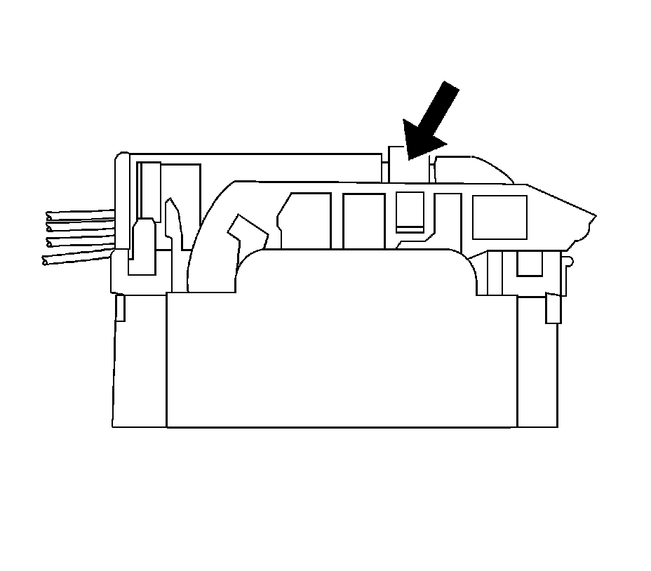
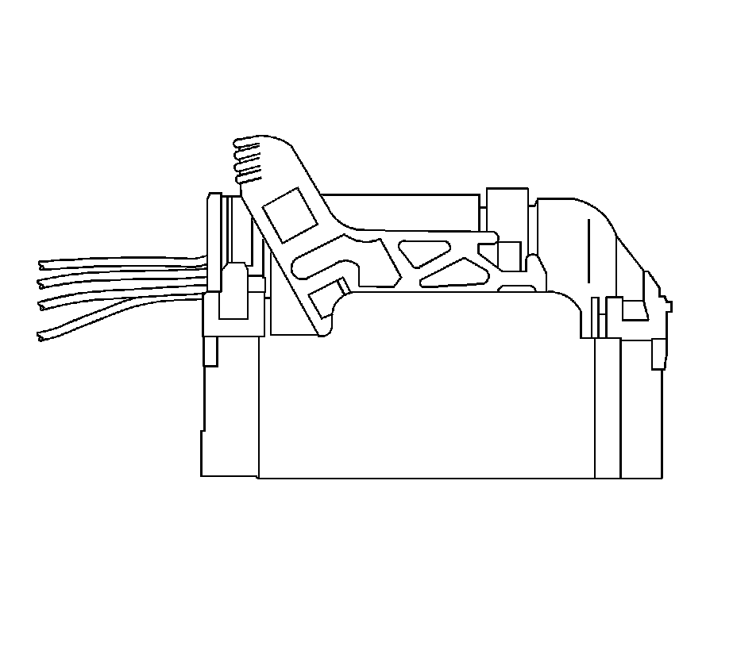
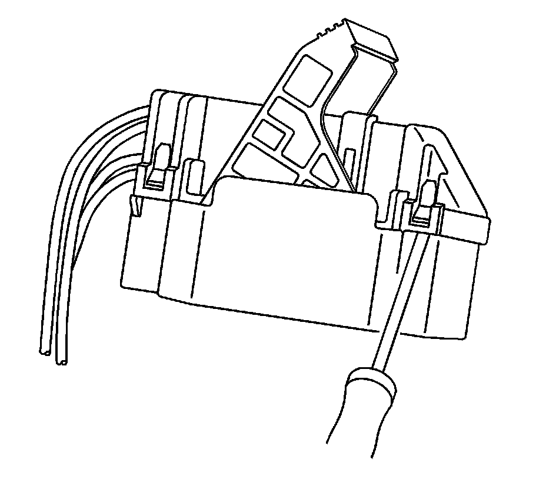
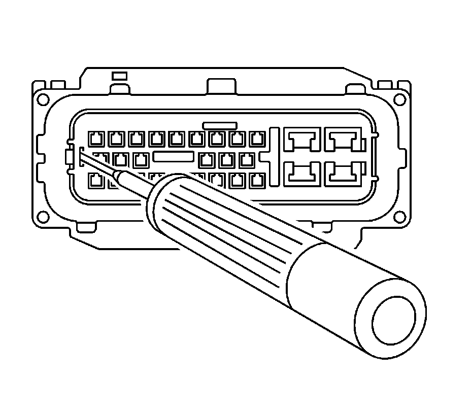
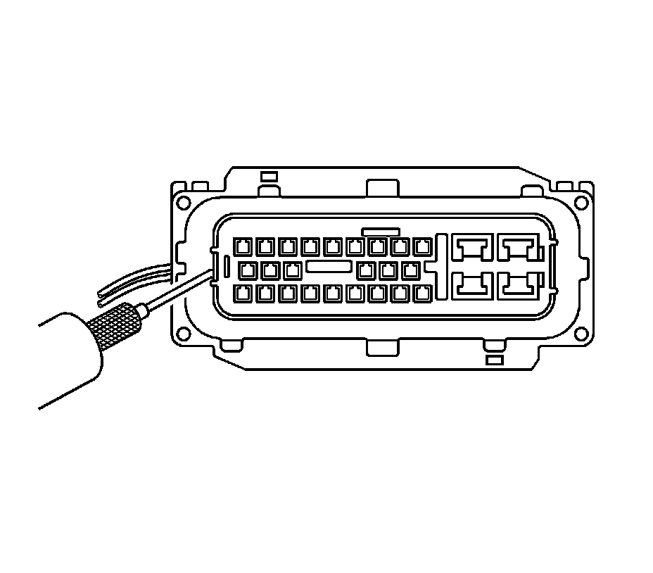
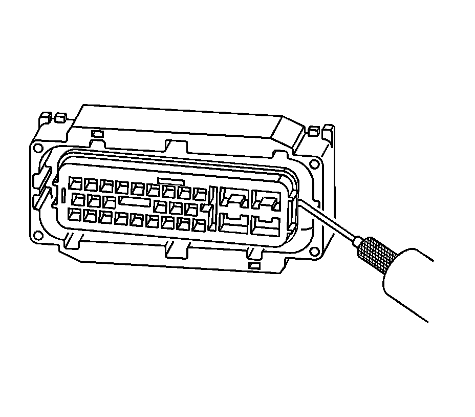
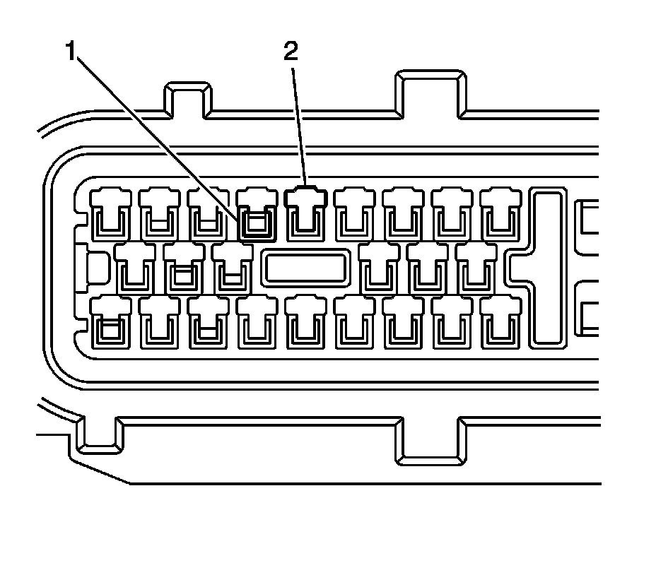
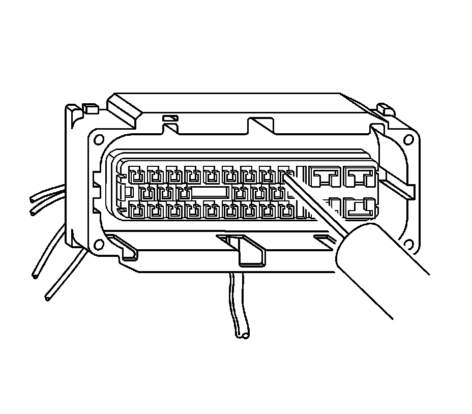
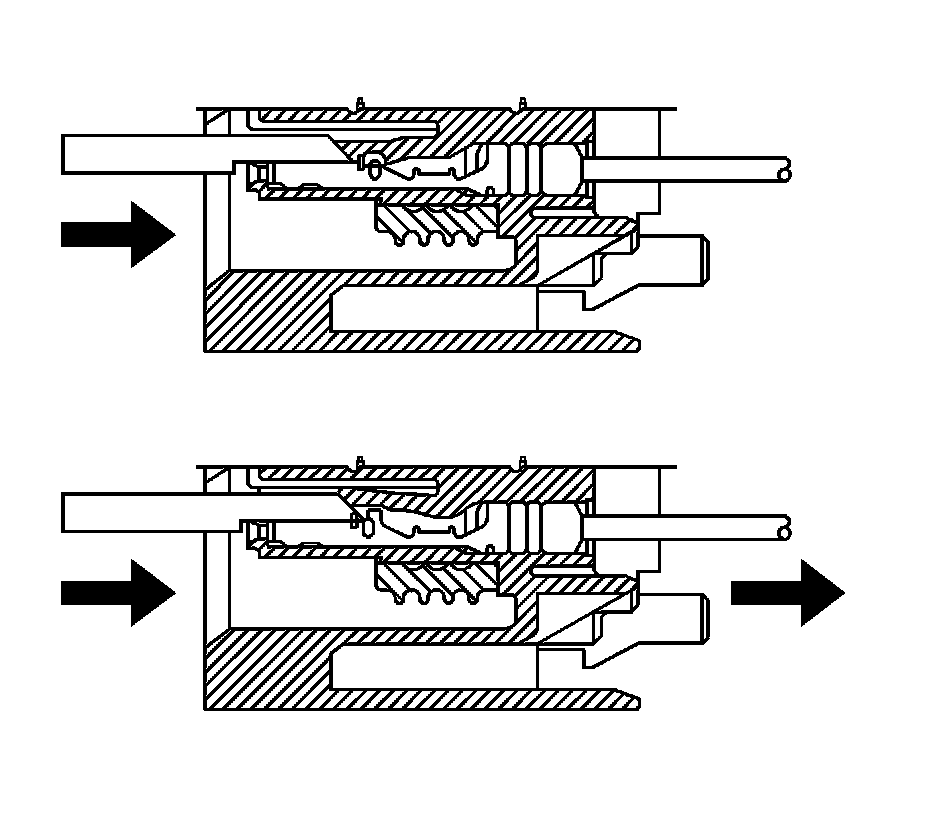

Sumitomo Connectors
SUMITOMO CONNECTORS
TOOLS REQUIRED
J-38125 Terminal Repair Kit
TERMINAL REMOVAL PROCEDURE

1. Slide the lever lock forward while pressing down on the lever lock release tab.

2. Disconnect the connector from the component.

3. Remove the dress cover by using a flat-blade tool to release the connector locking tabs and pulling off the dress cover.

4. Relieve the tension on the nose piece retainers by inserting J-38125-12A (12094429) into the single retainer slot on the end of the nose piece and gently prying out the locking tab. Repeat the process for both of the nose piece locking tabs on the opposite side of the nose piece.

5. Once the nose piece retainers are relaxed, use the J-38125-552 (15313892) to pull up the nose piece by hooking the tool under the nose piece and pulling up. The nose piece should raise slightly.

6. On the opposite side of the nose piece, use the J-38125-552 (15313892) to pull up the nose piece by hooking the tool under the nose piece and pulling up. The nose piece should release completely. If the nose piece does not come off, repeat the procedure on the opposite side.

7. The illustration above identifies the entry canal where the terminal release tool will be inserted, and the terminal cavity.
- Terminal (1)
- Entry Canal (2)

8. Insert the J-38125-553 (15315247) tool into the entry canal and pry up on the terminal retainer. The terminal retainer is a small plastic piece on the top of the terminal. The terminal retainer must be held up while the terminal is pulled out of the connector.

9. The illustration shows a cutaway view of the connector to aid the technician in releasing the terminal retainer.
10. See the release tool cross reference in the Reference Guide of the J-38125 Terminal Repair Kit to ensure that the correct release tool is used.
TERMINAL REPAIR PROCEDURE
Refer to the terminal crimping procedure in the Reference Guide of the J-38125 Terminal Repair Kit.
TERMINAL REPLACEMENT PROCEDURE
After the terminal is crimped to the wire, perform the following procedure in order to replace the terminal.
1. Slide the new terminal into the correct cavity at the back of the connector.
2. Push the terminal into the connector until it locks into place. The new terminal should be even with the other terminals. Insure that the terminal is locked in place by gently pulling on the wire.
3. To assemble the connector, reverse the connector disassembly procedure.